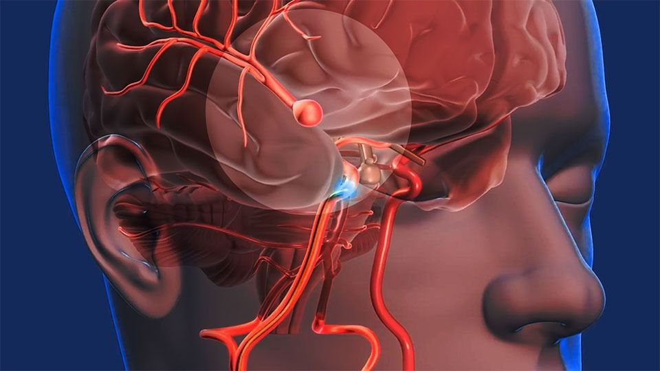

Tabla de contenidos del artículo
¿Qué es un accidente cerebrovascular?
Un accidente cerebrovascular o ataque cerebral sucede cuando se detiene el flujo sanguíneo a cerebral parte del cerebro. Al no poder recibir el oxígeno y nutrientes que necesitan, las células cerebrales comienzan a morir en minutos. Esto puede causar un daño severo al cerebro, discapacidad permanente e incluso la muerte.
Si piensa que usted o alguien está sufriendo un ataque cerebral, llame al 911 de inmediato. El tratamiento oportuno puede salvar una vida y aumentar la posibilidad de una rehabilitación y recuperación exitosa.
¿Cuáles son los tipos de accidentes cerebrovasculares?
Hay dos tipos de ataques cerebrales:
- El accidente cerebrovascular isquémico es causado por un coágulo de sangre que bloquea o tapa un vaso sanguíneo en el cerebro. Es el tipo más común, un 80% de los ataques cerebrales son isquémicos
- El accidente cerebrovascular hemorrágico es causado por un vaso sanguíneo que se rompe y sangra en el cerebro
Otra afección similar a un ataque cerebral es el ataque isquémico transitorio. A veces, se le llama "mini derrame". Sucede cuando la irrigación sanguínea al cerebro es bloqueada por poco tiempo. Si bien el daño a las células cerebrales no es permanente, lo coloca en mayor riesgo de sufrir un accidente cerebrovascular.
¿Quién está en riesgo de sufrir un accidente cerebrovascular?
Algunos factores aumentan su riesgo de tener un accidente cerebrovascular. Los mayores factores de riesgo incluyen:
- Presión arterial alta: El principal factor de riesgo de los accidentes cerebrovasculares
- Diabetes
- Enfermedades del corazón: La fibrilación auricular y otras afecciones cardiacas puede provocar coágulos de sangre que conduzcan a un ataque cerebral
- Fumar: El tabaquismo daña sus vasos sanguíneos y aumenta su presión arterial
- Historia clínica o familiar de accidente cerebrovascular o ataque isquémico transitorio
- Edad: Su riesgo aumenta a medida que envejece
- Raza y etnicidad: Los afroamericanos tienen un riesgo mayor de ataques cerebrales
Otros factores de riesgo relacionados incluyen:
- Uso de alcohol y drogas ilegales
- No hacer suficiente ejercicio
- Colesterol alto
- Dieta poco saludable
- Tener obesidad
¿Cuáles son los síntomas de un accidente cerebrovascular?
Los síntomas del accidente cerebrovascular ocurren a menudo rápidamente. Estos incluyen:
- Entumecimiento o debilidad repentina de la cara, brazo o la pierna (especialmente a un lado del cuerpo)
- Confusión repentina, dificultad para hablar o para entender el habla
- Problemas repentinos para ver con uno o ambos ojos
- Dificultad repentina para caminar, mareos, pérdida del equilibrio o coordinación
- Dolor de cabeza severo y repentino sin causa conocida
Si cree que usted o alguien más está sufriendo un ataque cerebral, llame al 911 de inmediato.
¿Cómo se diagnostican los accidentes cerebrovasculares?
Para hacer un diagnóstico, su profesional de la salud puede:
- Preguntar por sus síntomas e historia clínica
-
Hacer un examen físico, incluyendo una revisión de:
- Su estado de alerta mental
- Su coordinación y equilibrio
- Cualquier entumecimiento o debilidad en su cara, brazos y piernas
- Cualquier problema para hablar y ver en forma clara
-
Pedir algunas pruebas, que pueden incluir:
- Imágenes del cerebro: Como una tomografía computarizada o una resonancia magnética
- Pruebas del corazón: Pueden ayudar a detectar problemas cardíacos o coágulos de sangre que pueden haber conducido a un ataque cerebral. Pueden incluir un electrocardiograma y una ecocardiografía
¿Cuáles son los tratamientos de un accidente cerebrovascular?
Los tratamientos para el accidente cerebrovascular incluyen medicamentos, cirugía y rehabilitación. Los tratamientos que reciba dependen del tipo de accidente cerebrovascular y de la etapa del tratamiento. Las diferentes etapas son:
- Tratamiento de emergencia: Trata de detener un accidente cerebrovascular mientras está ocurriendo
- Rehabilitación después del accidente cerebrovascular: Busca superar las discapacidades causadas por el accidente cerebrovascular
- Prevención: Busca prevenir un primer derrame cerebral o, si ya lo ha tenido, prevenir que ocurra otro
Los tratamientos de emergencia para el accidente cerebrovascular isquémico suelen utilizar medicamentos:
- Puede recibir t-PA, (activador tisular del plasminógeno), un medicamento para disolver el coágulo de sangre. Solo puede obtener este medicamento dentro de las 4 horas posteriores al inicio de los síntomas. Cuanto antes pueda tomarlo, mayores serán sus posibilidades de recuperación
- Si no puede tomar ese medicamento, puede obtener otro que ayude a evitar que las plaquetas se agrupen para formar coágulos de sangre. O puede recibir un anticoagulante para evitar que los coágulos existentes crezcan
- Si tiene enfermedad de la arteria carótida, es posible que también necesite un procedimiento para abrir la arteria carótida bloqueada
Los tratamientos de emergencia para el accidente cerebrovascular hemorrágico se centran en detener el sangrado. El primer paso es encontrar la causa del sangrado en el cerebro. El siguiente paso es controlarlo:
- Si la presión arterial alta es la causa del sangrado, es posible que le administren medicinas para la presión arterial
- Si un aneurisma es la causa, es posible que necesite un clipaje (colocación de grapas) del aneurisma o una embolización con espiral. Estas cirugías sirven para prevenir una mayor filtración de sangre del aneurisma. También puede ayudar a prevenir que el aneurisma vuelva a romperse
-
Si una malformación arteriovenosa es la causa de un accidente cerebrovascular, es posible
que necesite repararla. Una malformación arteriovenosa es una maraña de arterias y venas
defectuosas que pueden romperse dentro del cerebro. Una reparación de malformaciones
arteriovenosas puede consistir en:
- Cirugía
- Inyectar una sustancia en los vasos sanguíneos de la malformación para bloquear el flujo sanguíneo
- Radiación para encoger los vasos sanguíneos de la malformación
La rehabilitación posterior al ataque cerebral puede ayudarle a volver a aprender las habilidades que perdió por los daños causados. El objetivo es tratar de volver a ser lo más independiente posible y tener una mejor calidad de vida.
La prevención de un nuevo accidente cerebrovascular también es importante, ya que tener uno aumenta el riesgo de sufrir otro. La prevención puede incluir cambios en el estilo de vida saludables para el corazón y medicamentos.
Video explicativo de Accidente cerebrovascular
¿Se pueden prevenir los accidentes cerebrovasculares?
Si ya ha tenido un accidente cerebrovascular o está en riesgo de tener uno y quiere prevenirlo en el futuro, puede hacer algunos cambios saludables en su estilo de vida al:
- Comer una dieta saludable para el corazón
- Lograr un peso saludable
- Manejar el estrés
- Hacer actividad física regular
- Dejar de fumar
- Controlar su presión arterial alta y los niveles de colesterol
Si estos cambios no son suficientes, es posible que necesite medicamentos para controlar sus factores de riesgo.